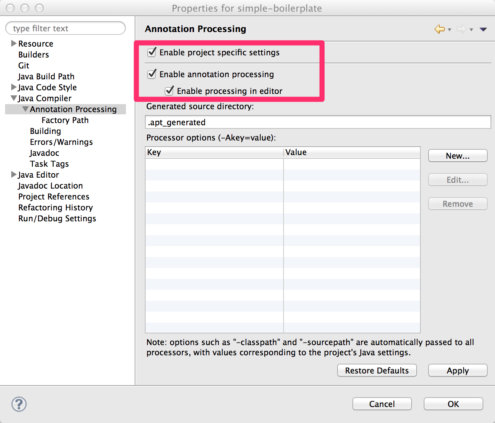
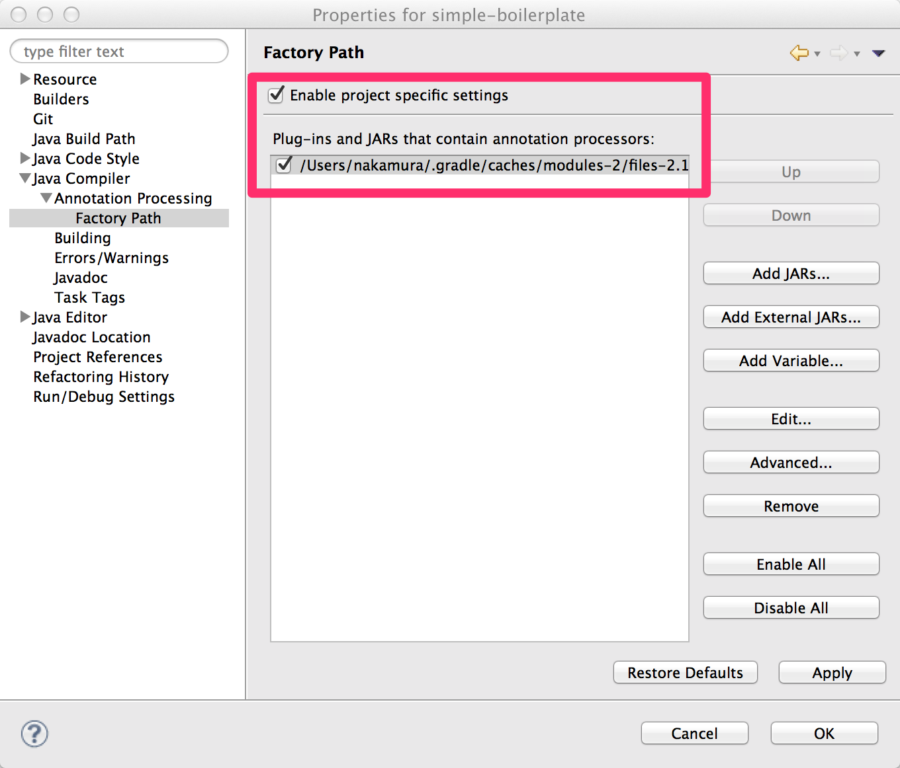

ビルド¶
Maven Central Repository¶
Doma の jar ファイルは Maven Central Repository から入手できます。 GroupId と ArtifactId の名称は以下の通りです。
| GroupId: | org.seasar.doma |
|---|---|
| ArtifactId: | doma |
Eclipse を使ったビルド¶
Eclipse でビルドを行う際のポイントは以下の通りです。
- プロジェクトの設定で注釈処理を有効にする
- Build Path に加えて Factory Path にも Doma の jar ファイルを設定する
注釈
手動で設定するよりも Gradle の eclipse タスクで自動設定することを推奨します。 詳細については、 domaframework/simple-boilerplate に含まれる build.gradle と eclipse.gradle を参照ください。
注釈処理の有効化¶
注釈処理を有効化するには、メニューから Project > Properties を選んで画面を開き 左のメユーから Java Compiler > Annotation Processing を選択します。
そして、下記に示すチェックボックスにチェックを入れます。
{kind=link}
Factory Path の設定¶
注釈処理を有効化するには、メニューから Project > Properties を選んで画面を開き 左のメユーから Java Compiler > Annotation Processing > Factory Path を選択します。
そして、下記に示すチェックボックスにチェックを入れ、 ビルドパスで指定しているのと同じバージョンの Doma の jar を登録します。
{kind=link}
Gradle を使ったビルド¶
Gradle でビルドを行う際のポイントは以下のとおりです。
- JavaクラスとSQLファイルの出力先ディレクトリを同じにする
- コンパイルより前にSQLファイルを出力先ディレクトリにコピーする
- 依存関係の設定でdomaへの依存を指定する
サンプルのbuild.gradleです。
apply plugin: 'java'
// JavaクラスとSQLファイルの出力先ディレクトリを同じにする
processResources.destinationDir = compileJava.destinationDir
// コンパイルより前にSQLファイルを出力先ディレクトリにコピーするために依存関係を逆転する
compileJava.dependsOn processResources
repositories {
mavenCentral()
maven {url 'https://oss.sonatype.org/content/repositories/snapshots/'}
}
dependencies {
compile "org.seasar.doma:doma:2.7.1-SNAPSHOT"
}
注釈
リポジトリにおける https://oss.sonatype.org/content/repositories/snapshots/ の設定は Doma の SNAPSHOT を参照したい場合にのみ必要です。
Doma の SNAPSHOT は Travis-CI でビルドが成功されるたびに作成されリポジトリに配置されます。
Gradle を使ったより詳細なビルドスクリプトの例として、 domaframework/simple-boilerplate を参照にしてください。